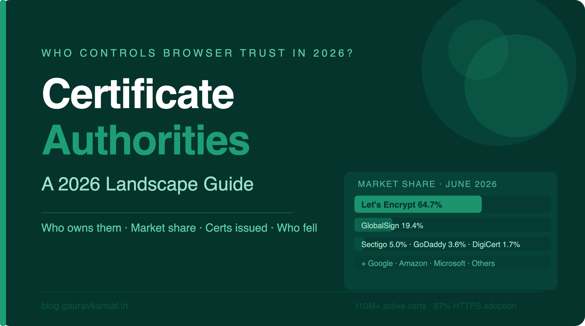

Every time you see a padlock in your browser, a Certificate Authority (CA) is silently doing its job — vouching that the website you are visiting is who it claims to be. Most of us never think about this. We just expect the padlock to be there. But behind that little icon is an industry that has been consolidating, evolving, and in some cases, collapsing, at a remarkable pace. Companies that were household names in security circles a decade ago have been swallowed up, shut down, or stripped of browser trust. New players — including some of the world's largest tech companies — have quietly become major issuers. And one non-profit organisation now issues more certificates than everyone else combined.
This post takes a clear-eyed look at who is still in the CA business in 2026, who owns them, how many certificates they are actually issuing, and what has changed. If you have not already, it is worth reading these companion posts first to get the full picture:
- A Chronicle of SSL/TLS: From Netscape's First Draft to TLS 1.3 — the complete history of the protocols that CAs secure
- EPIC CA Fails: A History of Certificate Authority Incidents (2008–2025) — the blunders, breaches and cover-ups that shaped CA trust
Consider this post the third in that series — the story of who survived, who grew, and who is now in charge of your browser's trust.
The Big Picture First
The CA market is growing. The global Certificate Authority market is valued at approximately $232 million in 2026 and is projected to reach nearly $400 million by 2031, growing at around 11% annually. That growth is being driven by the explosion of IoT devices, stricter compliance mandates, and the fact that every connected device now needs a certificate of some kind to communicate securely.
But here is the striking reality of today's CA landscape: six organisations issue roughly 90% of all certificates on the internet. And one of them — a non-profit you have probably heard of — issues more than half of all certificates on the web entirely for free. The SSL certificate market has never been more concentrated, and the commercial players are fighting hard over the remaining slice.
As of June 2026, there are over 110 million active SSL/TLS certificates on the internet. The United States alone accounts for over 61 million of them. And 87% of all websites now use HTTPS by default — up from just 18.5% a decade ago. The padlock is no longer a luxury. It is the baseline.
The CA Landscape in 2026 — Who Is Who
Below is a detailed breakdown of every significant CA currently operating, who owns them, and where they stand in the market.
1. Let's Encrypt (ISRG) — The Giant That Changed Everything
Owner: Internet Security Research Group (ISRG) — a US non-profit
Headquarters: San Francisco, California, USA
Founded: 2015
Type: Non-profit / Free CA
Market Share (June 2026, W3Techs): 64.7% of all websites | 68.2% CA market share
Certificates Issued: ~10 million per day as of late 2025; 54.4% of all public SSL/TLS certificates issued in Q1 2026 by volume (Cloudflare CT data)
There is no way to talk about the current CA landscape without starting here. Let's Encrypt is not just the largest CA — it has fundamentally changed what the internet looks like. When it launched in 2015, the idea of a CA giving away certificates for free, automatically, to anyone with a domain was genuinely radical. The commercial CA industry thought it was potentially suicidal. They were half right — it was suicidal for the commercial mass-market certificate business. But for the internet as a whole, it was transformative.
Run by the non-profit Internet Security Research Group (ISRG), Let's Encrypt crossed one billion total certificates issued in 2020. By late 2025 it was issuing around ten million certificates every single day. Its ACME protocol — which automates the entire process of getting and renewing a certificate — has become a web standard and is now supported by virtually every major hosting provider and web server.
Who sponsors ISRG? Mozilla, Google, Cisco, AWS, EFF, and hundreds of other organisations. It runs on donations and sponsorships. For context, it has around 20 full-time staff and secures a significant portion of the world's encrypted web traffic.
2. GlobalSign (GMO Group) — The Quiet Giant
Owner: GMO Internet Group (Japan)
Headquarters: Portsmouth, New Hampshire, USA (operational HQ); Tokyo, Japan (parent)
Founded: 1996
Type: Commercial CA
Market Share (June 2026, W3Techs): 19.4% of all websites | 20.4% CA market share
Position by Volume: A distant second in website usage; dominant in enterprise managed PKI
GlobalSign is one of the oldest CAs still operating and, in terms of website usage share, the second largest after Let's Encrypt. What is interesting is how that 19.4% share breaks down — GlobalSign is disproportionately strong in enterprise PKI, managed certificate services, and IoT device identity. It is not competing with Let's Encrypt for the free DV certificate market. It is doing something different and doing it very well.
Its parent company, GMO Internet Group, is a Japanese conglomerate that owns and operates a wide range of internet infrastructure businesses. GlobalSign operates under the GMO GlobalSign brand and has been quietly building out certificate lifecycle management (CLM) automation tools — most recently launching its LifeCycleX platform in September 2025 and TLS Connect in April 2026, aimed specifically at small and medium businesses that need automation but cannot afford enterprise-scale solutions.
GlobalSign has no known pending distrust actions and maintains a clean compliance record in all major browser root programs. It is arguably the most stable large commercial CA in the market right now.
3. Sectigo — The New Entrust, Literally
Owner: Private equity-backed (Scottsdale, AZ)
Headquarters: Scottsdale, Arizona, USA
Founded: 1998 (as Comodo CA; rebranded Sectigo in 2018)
Type: Commercial CA
Market Share (June 2026, W3Techs): 5.0% of all websites | 5.3% CA market share
Position by Volume: Surged to 11.7% of all CT-logged certificates in Q1 2026 (+41.2% QoQ)
Sectigo has had quite a year. Originally the CA arm of Comodo (yes, the same Comodo that features prominently in my Epic CA Fails post), it rebranded as Sectigo in 2018 after being spun out as an independent company. It has since grown steadily in the commercial CA space, particularly in the small and medium business certificate market.
But the really significant development came in January 2025, when Sectigo acquired Entrust's public certificate business after Google, Mozilla, and Apple distrusted Entrust's roots. Overnight, Sectigo doubled its enterprise client base and inherited the challenge of migrating a huge number of Entrust customers onto its own trusted infrastructure. Sectigo's CEO Kevin Weiss publicly acknowledged the migration would take around 90 days, possibly longer.
Its Q1 2026 volume surge of 41.2% quarter-on-quarter is significant and largely attributed to Cloudflare's Universal SSL programme (which uses Sectigo/ZeroSSL certificates for its free HTTPS offering) and continued free-tier expansion. Sectigo also owns the ZeroSSL brand, which offers free DV certificates and competes directly with Let's Encrypt.
4. GoDaddy — The Hosting Giant's CA Arm
Owner: GoDaddy Inc. (NYSE: GDDY) — publicly traded
Headquarters: Tempe, Arizona, USA
Type: Commercial CA (integrated with hosting)
Market Share (June 2026, W3Techs): 3.6% of all websites | 3.8% CA market share
Position by Volume: 5.9% of all CT-logged certificates in Q1 2026
GoDaddy's CA business is deeply integrated into its web hosting empire. When someone buys a hosting plan from GoDaddy and clicks "add SSL", there is a good chance the certificate that gets issued comes from GoDaddy's own CA. This makes GoDaddy's market share somewhat self-referential — it mostly reflects GoDaddy's dominance in the web hosting market rather than independent certificate sales.
The CA has had its share of incidents (see my EPIC CA Fails post), including the August 2016 authentication bypass and a 2022 data breach that exposed certificate-related data for approximately 1.2 million customers. But it remains operational and trusted in all major browser root programs. Its focus is convenience for GoDaddy's own customer base rather than competing in the enterprise PKI space.
5. DigiCert Group — The Enterprise Standard
Owner: Clearlake Capital Group and TA Associates (private equity) — acquired October 2025
Headquarters: Lehi, Utah, USA
Founded: 2003
Type: Commercial CA — enterprise-focused
Brands: DigiCert, GeoTrust, Thawte, RapidSSL (all acquired from Symantec in 2017)
Market Share (June 2026, W3Techs): 1.7% of all websites | 1.8% CA market share
Position by Volume: 6.6% of all CT-logged certificates in Q1 2026
DigiCert is the CA you find securing the largest organisations in the world. Banks, governments, Fortune 500 companies, critical infrastructure — DigiCert's bread and butter is high-assurance certificates for organisations that need more than a free DV certificate and are willing to pay for it. Its W3Techs website share of 1.7% looks underwhelming compared to Let's Encrypt, but that is the wrong way to read it. DigiCert does not compete in the free or SMB market at all — it competes for contracts worth hundreds of thousands of dollars per year.
Its ownership changed in October 2025, when private equity firms Clearlake Capital Group and TA Associates acquired it from Thoma Bravo (which had owned it since 2015). DigiCert has been named a Leader in the IDC MarketScape for Worldwide Certificate Lifecycle Management in 2026 and recently acquired Valimail (September 2025) to bolster its email authentication capabilities.
The July 2024 mass revocation incident — where DigiCert revoked over 83,000 certificates belonging to 6,800 customers due to a domain validation bug — was its most significant public stumble. The episode sparked serious debate about the CA/Browser Forum's 24-hour revocation rule and whether it is practical at scale. You can read the full account of this and other CA incidents in our EPIC CA Fails post.
6. Amazon Trust Services — The Cloud Incumbent
Owner: Amazon Web Services (Amazon.com Inc.)
Headquarters: Seattle, Washington, USA
Founded: 2016
Type: Commercial CA — AWS-integrated
Position by Volume: 3.8% of all CT-logged certificates in Q1 2026
W3Techs Share: Under 0.1% (certificates largely not visible on public website endpoints)
Amazon Trust Services is a fascinating CA because most of its certificates are not securing public websites — they are securing internal AWS infrastructure, API endpoints, IoT devices, and services within the Amazon ecosystem. This is why its W3Techs share (which measures certificates on public-facing websites) looks tiny while its Certificate Transparency volume (which captures all issued certificates) is comparatively substantial.
Through AWS Certificate Manager (ACM), Amazon issues free certificates to AWS customers for use within AWS services. These are massively popular but largely invisible on the public web. Amazon Trust Services is a quietly significant CA that most end users will never directly encounter.
7. Google Trust Services — The Search Giant's Stake in PKI
Owner: Alphabet Inc. (Google)
Headquarters: Mountain View, California, USA
Founded: 2017 (acquired GlobalSign's CA operations in part)
Type: Commercial CA — Google ecosystem-focused
Position by Volume: 16.7% of all CT-logged certificates in Q1 2026 — the second largest by volume
This is the most surprising name on the list for many people. Google runs its own CA — and it has quietly become the second largest issuer of SSL/TLS certificates in the world by volume, sitting at 16.7% of all publicly logged certificates in Q1 2026, ahead of Sectigo in raw issuance terms.
Google Trust Services primarily issues certificates for Google's own products and services (Google.com, YouTube, Gmail, Google Cloud, etc.) and also issues free certificates to Google Cloud customers. Like Amazon, much of its issuance is within its own ecosystem and does not show up prominently in W3Techs' website-facing surveys. It also championed the Certificate Transparency (CT) initiative that now requires all publicly trusted certificates to be logged — making it both a major CA and the primary architect of the system that monitors CAs. Understanding how those certificates actually work is covered in detail in our posts on the TLS Handshake, Cipher Suites, and Server Name Indication (SNI).
8. Microsoft — The Fastest Growing CA You Have Never Heard Of
Owner: Microsoft Corporation (NASDAQ: MSFT)
Headquarters: Redmond, Washington, USA
Type: Commercial CA — Azure ecosystem
Position by Volume: Issued 20.65 million certificates in Q1 2026, up 500% from Q4 2025; April 2026 alone produced 28.8 million — more than all of Q1
If one number from 2026's CA data stands out, it is this: Microsoft's certificate issuance grew by 500% in a single quarter. In Q4 2025 it issued 3.44 million certificates. In Q1 2026 that jumped to 20.65 million. April 2026 alone was 28.8 million. Analysts tracking Certificate Transparency logs describe this as the largest single-quarter growth of any CA on record, and assess it as structural — driven by Azure's expanding role in managing certificate issuance for enterprise cloud customers — rather than a one-off anomaly.
Microsoft has been deeply embedded in the CA ecosystem for decades through its Active Directory Certificate Services (AD CS) for internal enterprise PKI, but its push into publicly trusted certificates via Azure is a newer and increasingly significant development. Watch this space.
9. Actalis — The Italian Outsider
Owner: Aruba S.p.A. (Italy)
Headquarters: Milan, Italy
Type: Commercial CA
Market Share (June 2026, W3Techs): 0.6% of all websites | 0.7% CA market share
Actalis is the CA arm of Aruba S.p.A., one of Italy's largest cloud and web hosting providers. It holds a small but stable share of the European market and is trusted in all major browser root programs. Its share is modest by global standards but significant within Italy and the wider European market. It is a good example of a regional CA that has maintained a clean record and serves a defined geographic customer base rather than competing globally.
10. Certum — The Polish Holdout
Owner: Asseco Data Systems (Poland)
Headquarters: Szczecin, Poland
Type: Commercial CA
Market Share (June 2026, W3Techs): 0.5% of all websites | 0.5% CA market share
Certum, operated by Asseco Data Systems (a Polish tech conglomerate), is one of the few remaining significant European-headquartered commercial CAs that is neither US-owned nor Japanese-owned. It is particularly strong in the Polish and Central European market and offers a broad range of certificate types including qualified electronic signatures under EU eIDAS regulations — a market segment where it has a strong reputation. Its global share is small but its regional relevance is real.
The Fallen and the Distrusted
Any honest 2026 CA landscape piece has to acknowledge who is no longer at the table in the same way. The full story of each of these failures is documented in our EPIC CA Fails post, but here is the summary:
Entrust sold its public certificate business to Sectigo in January 2025, following the decision by Google, Mozilla, and Apple to stop trusting Entrust roots for new certificates issued after October 2024. It remains a player in private PKI and identity solutions, but its era as a publicly trusted CA in the traditional sense is over.
Chunghwa Telecom and Netlock were distrusted by Google Chrome in August 2025 following documented patterns of compliance failures and broken improvement commitments. Their certificates issued after July 31, 2025 trigger security warnings in Chrome.
DigiNotar was destroyed by its 2011 breach and no longer exists.
Symantec's CA was sold to DigiCert in 2017 following Google's distrust action. The Symantec, GeoTrust, Thawte, and RapidSSL brands now all issue under DigiCert's trusted roots. For context on the CA certificate chain and how trust hierarchies actually work, see our post on CA Certificate Chain.
TrustCor was removed from browser root programs in 2022 after security researchers uncovered troubling ties between TrustCor and US intelligence contractors.
Notable Smaller Players Still Operating
Beyond the big names, there are a number of smaller CAs still operating with sub-0.1% market share on W3Techs but serving specific regional or sector niches:
SSL.com — US-based commercial CA, popular with smaller businesses. Had a significant DCV vulnerability in April 2025 that led to wrongful issuance of certificates for high-profile domains including Alibaba Cloud, but it was caught, patched, and remains trusted. Also operates as an intermediate for other certificate resellers.
IdenTrust — Best known as the organisation that cross-signed Let's Encrypt's early certificates, giving them instant browser trust before ISRG's own roots were embedded in browsers. IdenTrust is heavily focused on US federal government and healthcare PKI and maintains a very low public web profile.
Secom Trust (Japan) — 0.2% W3Techs market share, significant in Japan's government and enterprise PKI space.
Buypass (Norway) — A Norwegian state-owned CA offering free DV certificates via ACME. Competes with Let's Encrypt in the Nordic market and offers a useful fallback for organisations that want geographic diversity in their CA choices.
ZeroSSL — Owned by Sectigo, ZeroSSL offers free 90-day DV certificates with an ACME endpoint. It has grown significantly as an alternative to Let's Encrypt and is widely used by Cloudflare's Universal SSL infrastructure.
HARICA (Greece) — Academic CA operated by the Greek Universities Network. Primarily serves Greek academic institutions but is trusted in major browser root programs. An interesting example of an academic community-run CA that has maintained compliance and trust for decades.
SwissSign — Swiss Post-owned CA, focused on Swiss government and enterprise clients. Strong alignment with Swiss data sovereignty requirements.
Deutsche Telekom — Germany's former state telecom still operates a CA focused on German enterprises and government, competing alongside Bundesdruckerei in the German market.
The Big Trend: Certificate Lifetimes Are Shrinking
One more thing worth knowing as you look at this landscape: the rules are changing fast. The CA/Browser Forum — the industry body that sets baseline requirements for CAs — adopted new rules in March 2025 that are dramatically shortening how long certificates can be valid. As of March 15, 2026, maximum certificate validity has dropped to 200 days. It will fall to 100 days in March 2027, and by March 2029, certificates will be capped at just 47 days.
This is a seismic shift. It means that by 2029, every certificate on the internet will need to be renewed roughly every six weeks. Manual renewal becomes essentially impossible at any scale. Automation — through ACME and certificate lifecycle management platforms — stops being a nice-to-have and becomes mandatory. This change will squeeze smaller, manual-process CAs out of the market and further advantage automated platforms like Let's Encrypt, ZeroSSL, Buypass, and the CLM automation tools being built by DigiCert, GlobalSign, and Sectigo. The CA industry in 2029 will look very different from the one we have today.
Summary Table
| Certifying Authority | Owner | HQ | W3Techs Share (Jun 2026) | CT Volume Share (Q1 2026) | Status |
|---|---|---|---|---|---|
| Let's Encrypt (ISRG) | Non-profit (ISRG) | USA | 64.7% | 54.4% | ✅ Active |
| GlobalSign | GMO Group (Japan) | USA/Japan | 19.4% | ~1% | ✅ Active |
| Sectigo / ZeroSSL | Private Equity | USA | 5.0% | 11.7% | ✅ Active (acquired Entrust CA) |
| GoDaddy | GoDaddy Inc. (Public) | USA | 3.6% | 5.9% | ✅ Active |
| DigiCert Group | Clearlake Capital / TA | USA | 1.7% | 6.6% | ✅ Active |
| Google Trust Services | Alphabet / Google | USA | <0.1% | 16.7% | ✅ Active |
| Amazon Trust Services | Amazon / AWS | USA | <0.1% | 3.8% | ✅ Active |
| Microsoft | Microsoft Corp. | USA | <0.1% | ~2% (growing fast) | ✅ Active / Fastest growing |
| Actalis | Aruba S.p.A. (Italy) | Italy | 0.6% | <0.1% | ✅ Active |
| Certum | Asseco (Poland) | Poland | 0.5% | <0.1% | ✅ Active |
| IdenTrust | HID Global (US) | USA | <0.1% | <0.1% | ✅ Active (US Gov/Healthcare) |
| SSL.com | SSL Corp. (Private) | USA | <0.1% | <0.1% | ✅ Active (patched 2025 DCV bug) |
| Buypass | Norwegian State | Norway | <0.1% | <0.1% | ✅ Active (free DV via ACME) |
| Entrust | Entrust Corp. | Canada/USA | <0.1% | N/A | ⚠️ Public CA business sold to Sectigo (Jan 2025) |
| Chunghwa Telecom | Taiwanese Govt | Taiwan | <0.1% | N/A | ❌ Chrome-distrusted Aug 2025 |
| Netlock | Private (Hungary) | Hungary | <0.1% | N/A | ❌ Chrome-distrusted Aug 2025 |
| DigiNotar | — | Netherlands | — | — | ❌ Defunct (2011 breach) |
| Symantec CA | — | — | — | — | ❌ Sold to DigiCert (2017) |
| TrustCor | — | — | — | — | ❌ Removed from roots (2022) |
Closing Thoughts
The Certificate Authority landscape in 2026 looks nothing like it did ten years ago. A non-profit has eaten the mass market. The tech giants — Google, Amazon, and increasingly Microsoft — have become major issuers within their own ecosystems. The traditional commercial CAs are consolidating, with Sectigo now managing what was once Entrust's customer base. And the rules around certificate lifetimes are about to force a wave of automation adoption that will reshape the market again by the end of the decade.
What has not changed is why any of this matters. The entire security model of the web rests on these organisations doing their jobs correctly, consistently, and transparently. When they do not — as my Epic CA Fails series documents in painful detail — the consequences can range from embarrassing to catastrophic. If you want to understand the underlying mechanics of why a compromised CA is so dangerous, our posts on TLS Session Resumption, Flaws in ServerKeyExchange Messages, and the FREAK Attack explain the protocol-level impact in detail. The consolidation we are seeing is not inherently bad, but it does mean that the failures of a smaller number of players now have larger consequences. Browser vendors, particularly Google, have shown they are willing to act when CAs fall short. That accountability — more than any technical standard — is what keeps the whole system honest.
Data sources: W3Techs SSL Certificate Authority Market Share (June 13, 2026), Cloudflare Radar Certificate Transparency (Q1 2026) via TechnologyChecker.io, Mordor Intelligence CA Market Report (2026), Let's Encrypt / ISRG Blog (December 2025), BleepingComputer, The Hacker News, SecurityWeek. Market shares reflect the date of publication (as of June 2026) and will change over time.